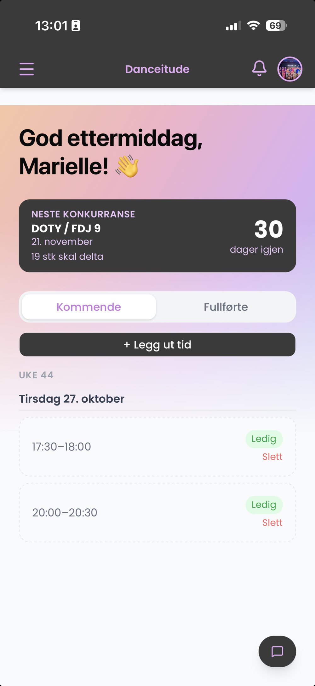
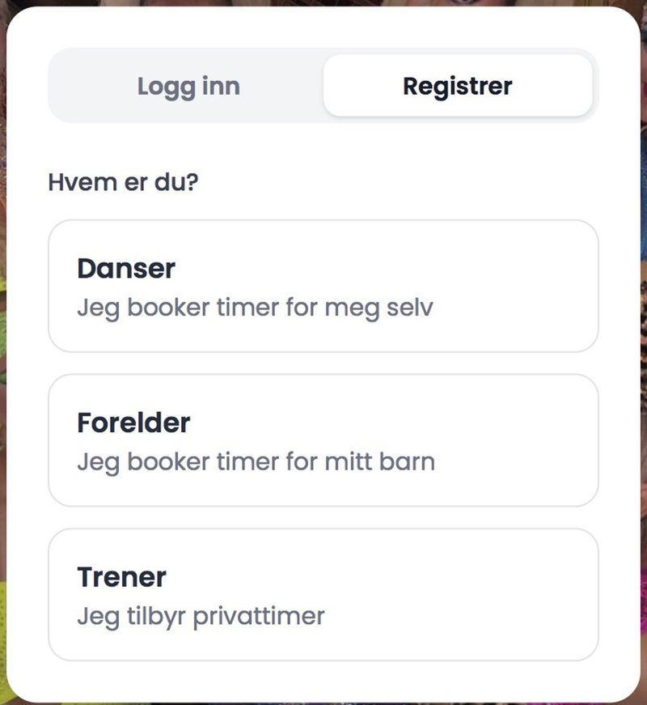
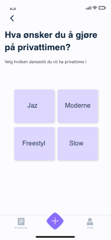
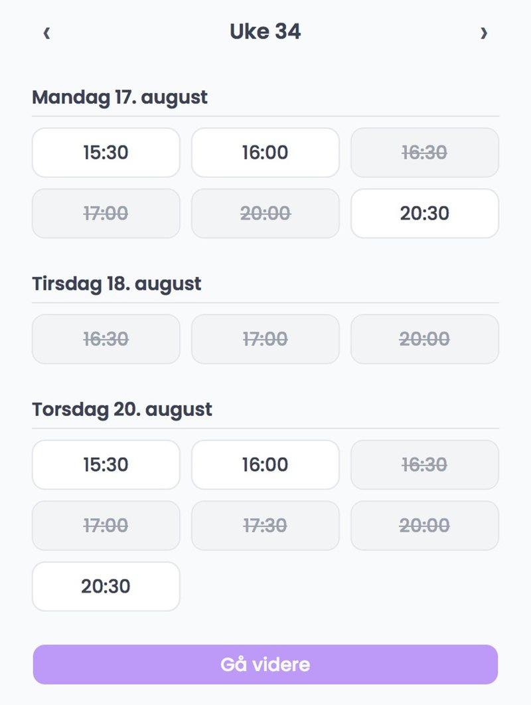
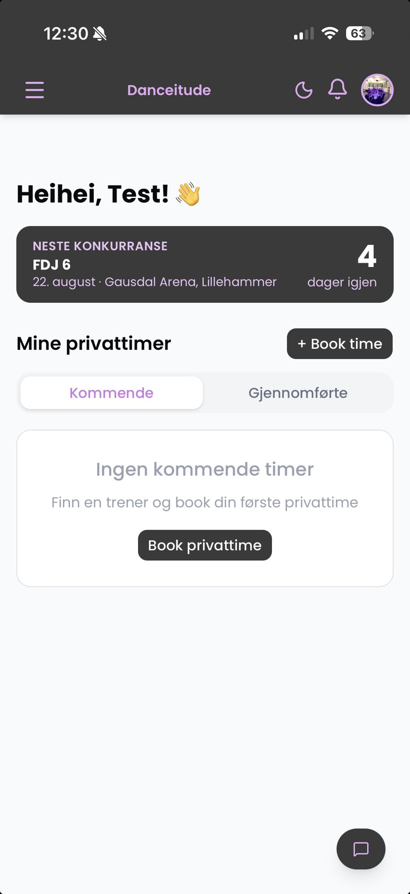
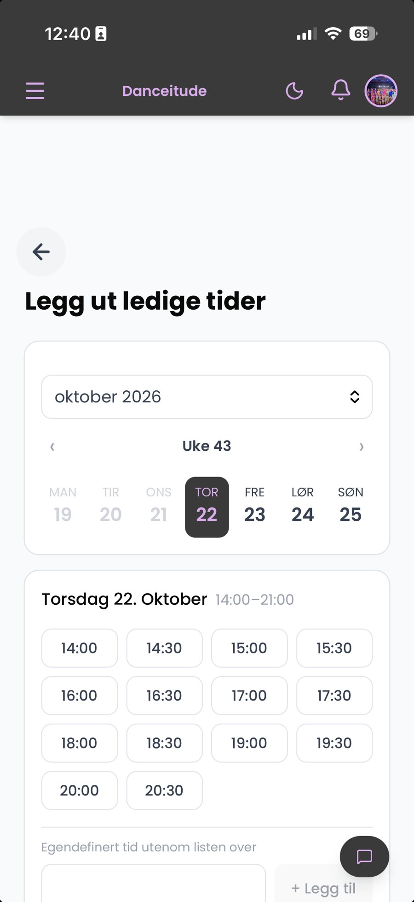
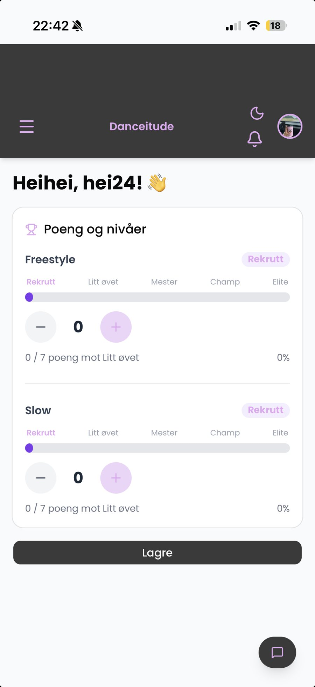
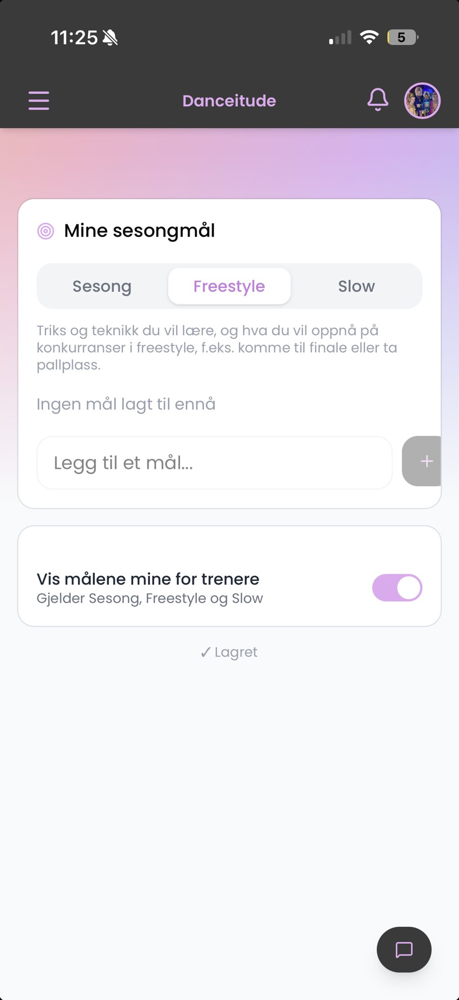
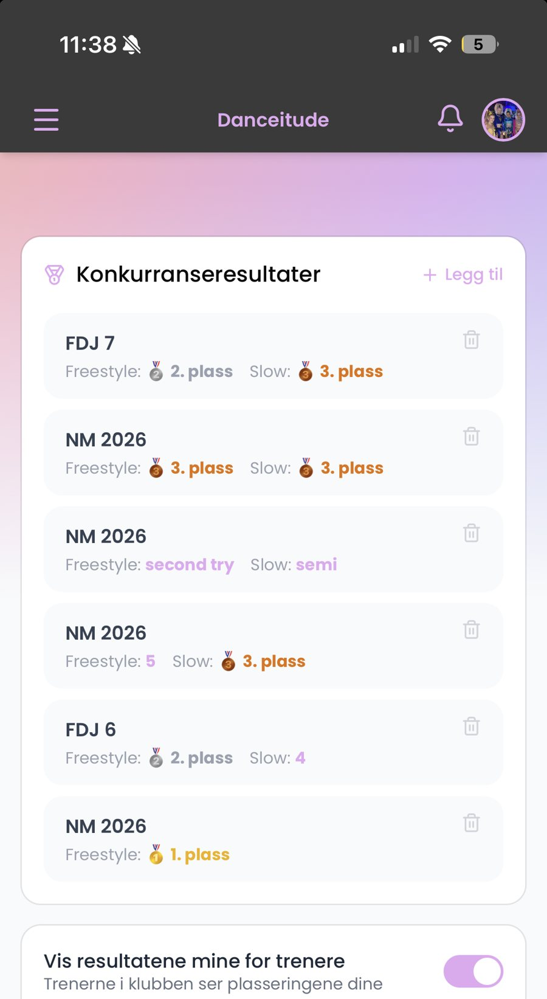

Danceitude – fra Google Docs til App Store
En bookingapp for privattimer i danseklubber. Jeg har designet og utviklet hele appen selv – fra de første workshopene med brukerne til lansering i App Store.
- 200brukere
- 3danseklubber
- 3brukerworkshops

Problemet
Ledige privattimer lå i et delt Google Docs-dokument, og avtaler ble gjort i meldinger på tvers av apper. Ingen hadde full oversikt, og det ble dobbeltbookinger. Trenerne brukte tid på administrasjon i stedet for trening.
«Før måtte vi lete i Google Docs og sende meldinger for å finne ledige timer. Nå er alt i appen – det er bare å booke!»
Brukerinnsikt
- Workshop 1 · Kartlegging Dansere, foreldre og trenere i samme rom. De delte erfaringer og skisserte selv hvordan en bedre løsning skulle fungere.
- Workshop 2 · Prototypetesting En tidlig prototype ble testet med ekte brukere. Tilbakemeldingene avgjorde hvilke funksjoner som trengtes – og hvilke som ikke gjorde det.
- Workshop 3 · Ferdig produkt Hele løsningen ble testet for å bekrefte at den løste problemene vi startet med.
Viktigste funn: Prototypen hadde bare dansere og administratorer – men det er ofte foreldrene som booker for barna sine. Derfor fikk foreldre en egen brukerrolle i appen.

Designprosessen
Fra prototype i Adobe XD til ferdig app – formet av tilbakemeldingene fra workshopene.





- Egne flater per rolle. Dansere, foreldre og trenere ser bare det som er relevant for dem.
- Tydelige statuser. Ledige og opptatte tider er lett å skille, så dobbeltbookinger unngås.
- Mindre administrasjon. Trenere legger ut tider selv, og danserne booker direkte.
Løsningen
Én app med egne flater for dansere, foreldre og trenere: booking og avbestilling, push-varsler når timer legges ut eller bookes, og oppfølging av utviklingen over sesongen.






Utvikling med AI
Jeg utviklet appen selv, fra prototype til fungerende produkt, med AI-verktøy som Claude Code. Det gjorde det mulig å gå raskt fra innsikt til noe brukerne kunne teste, og å forbedre appen etter tilbakemeldingene. Appen finnes som iOS-app i App Store og i nettleseren.
Resultat og læring
- Lansert i App Store og i nettleseren
- 3 danseklubber bruker appen
- 200 brukere
Å teste tidlig med alle brukergruppene sparte meg for å bygge feil ting. Uten workshop 2 hadde foreldrene – de som ofte booker og betaler – ikke hatt en plass i appen.
Appen videreutvikles fortsatt sammen med dansere, foreldre og trenere. De beste løsningene blir ikke laget for brukerne, men sammen med dem.